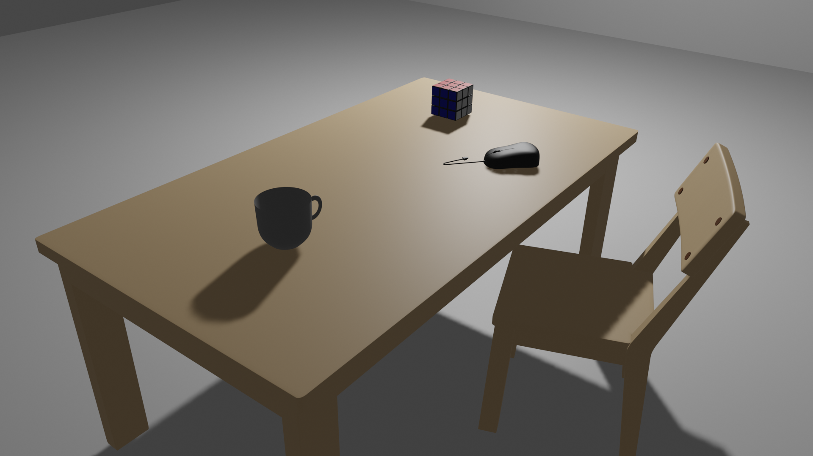
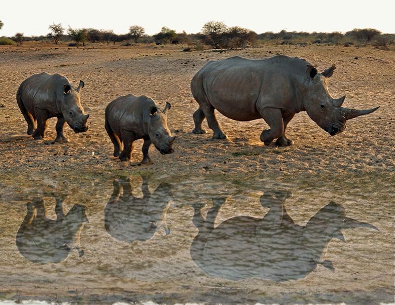

Nayeli Guerrero
Diseñadora y creadora digital en modelado 3D y 2D, edición fotográfica y diseño visual. Transformo ideas en experiencias visuales únicas.
Diseñadora y creadora digital en modelado 3D y 2D, edición fotográfica y diseño visual. Transformo ideas en experiencias visuales únicas.
Soy Nayeli Guadalupe Guerrero Tapia, tengo 19 años y estudio en la carrera de Entornos Virtuales y Negocios Digitales, me gusta el diseño y la creación del diseño digital como también la funcionalidad del modelado 2D y 3D.Mi objetivo es seguir aprendiendo, experimentando con nuevas tecnologías y aportar soluciones creativas e innovadoras en cada proyecto en el que participo.

Creación de escenarios y objetos tridimensionales con atención al detalle en texturas, volúmenes y composición. Proyectos enfocados en entornos virtuales funcionales y estéticos.
Ver proyecto...
Retoque fotográfico profesional, fotomontajes y corrección de color utilizando herramientas avanzadas como la selección precisa con Lazo y la restauración con Pincel Corrector y Parche.
Ver proyecto...Desarrollo de gráficos bidimensionales, diseño visual y conceptualización orientada a la creación de interfaces y experiencias digitales atractivas.
Ver proyecto...